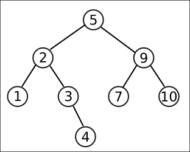
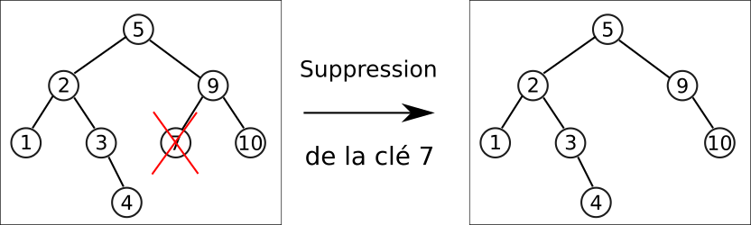
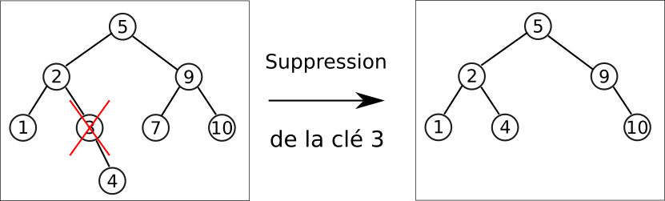
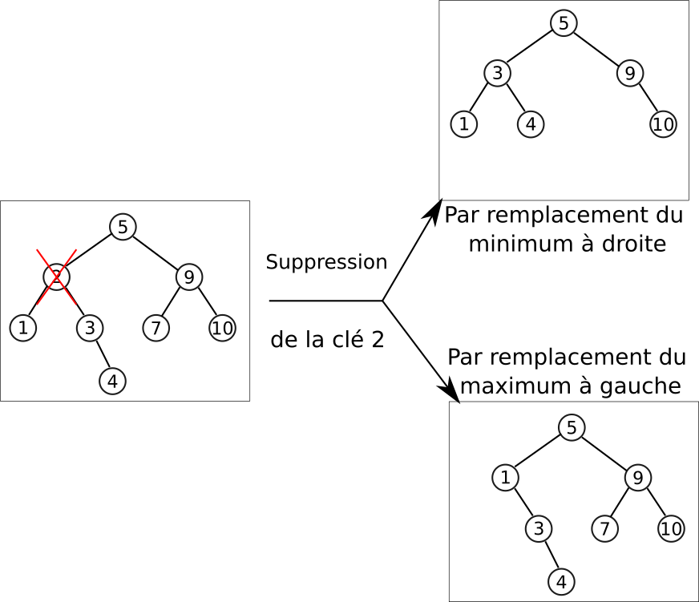

Encapsulation d'un ABR en Python
Dans cette partie nous travaillerons dans un fichier ABR.py qui contiendra les classes, méthodes et fonctions nécessaires.
Classes Node et ABR
Comme un ABR est avant tout un arbre binaire, nous allons utiliser une construction similaire pour la classe Node à celle déjà effectuée pour les arbres binaires :
class Node :
def__init__(self, valeur, gauche = None, droit = None, parent = None) :
self.valeur = valeur
self.gauche = gauche
self.droit = droit
self.parent = parent
Méthode estFeuille
Ajouter une méthode estFeuille renvoyant un booléen permettant de savoir si le noeud en question est une feuille de l'arbre.
A venir !
Une fois cette classe définie, nous allons définir une classe ABR qui encapsulera la totalité de l'arbre et des méthodes qui lui sont associées (avec quelques exceptions toutefois pour ne pas surcharger la compréhension des élements suivants).
class ABR :
def __init__ (self, racine = None) :
self.racine = racine
Méthode estVide
Ajouter une méthode estVide à la classe ABR renvoyant un booléen permettant de savoir si l'arbre est vide
A venir !
Méthode hauteur
- Copier-coller la fonction
hauteur, déjà vue dans la partie sur les arbres binaires, en-dehors des classesABRetNode. - Créer une méthode
hauteurà la classeABRrenvoyant la hauteur de l'arbre, et utilisant la fonctionhauteurci-dessus. Vous pouvez utiliser le code suivant permettant d'implémenter l'ABR représenté ci-dessous pour tester vos différentes méthodes :

if __name__ == "__main__" :
n1 = Node(1)
n2 = Node(3)
n3 = Node(2, n1, n2)
n1.parent = n3
n2.parent = n3
n4 = Node(10)
n5 = Node( 7)
n6 = Node(9,n5, n4)
n4.parent=n6
n5.parent = n6
n7 = Node(5, n3, n6)
n3.parent = n7
n6. parent = n7
n8 = Node(4)
n2.droit = n8
n8.parent = n2
tree = ABR(n7)
A venir !
Visualisation d'un ABR
Sous forme de texte
L'objectif est de représenter un ABR soius la forme d'une chaîne de caractères multilignes, telle que celle-ci :
5
2
1
3
X
4
9
7
10
Dans cette représentation :
- chque niveau est indenté de deux espaces supplémentaires par rapport au suivant ;
- les noeuds sont affichés, puis leur sous-arbre gauche si il existe, puis leur sous-arbre droit si il existe ;
- si un sous-arbre n'existe pas, il est remplacé par
X, sauf dans le cas des feuilles où les sous-arbres ne sont pas affichés.
Méthode toString
Ajouter une méthode toString à la classe Node qui renvoie une chaîne de caractères correspondant à l'affichage précédent.
A titre d'aide, la méthode toString prend, en plus de l'argument obligatoire self, un argument shift représentant le décalage de caractère déjà effectué. La représentation d'un noeud sera alors donnée par :
representation = shift + str(self.valeur)+"\n"
L'appel n7.toString() doit renvoyer la bonne représentation.
A venir !
Méthode DUNDERS __str__
Ajouter une méthode DUNDERS __str__ à la classe ABR qui renvoie la chaîne de caractères correspondant à l'affichage de l'arbre.
A venir !
Avec le module Graphviz
Bon, ok, nous avons une représentation, mais elle est loin d'être lisible...
Heureusement il existe un module python, le module graphviz, qui va nous permettre de convertir notre ABR en un fichier pdf plus lisible. L'objectif n'étant pas de comprendre comment fonctionne graphviz, voici les codes nécessaires :
- Installez le module
graphvizdansThonny. -
Importez la classe
Digraphdepuis ce module en ajoutant :3. Ajoutez à la classefrom graphviz import DigraphNodela méthode suivante :4. Ajoutez à la classedef toImage(self, graphe, etiquette = None) : noeud = str(self.valeur) graphe.node(noeud) if not(self.parent is None) : graphe.edge(str(self.parent.valeur), noeud, label=etiquette) if not(self.gauche is None) : self.gauche.toImage(graphe, "G") if not(self.droit is None) : self.droit.toImage(graphe, "D")ABRla méthode suivante :5. Testez la méthodedef toImage(self, title="arbre") : if not(isinstance(title, str)) : title = 'arbre' graphe=Digraph() self.racine.toImage(graphe) graphe.render(title, view = True)toImagesur l'objettree. Elle doit vous donner un PDF nomméarbre.pdf(ou autre si vous avez renseigné l'agument optionneltitle) contenant une représentation de l'ABR.Attention
Si vous relancez le programme, celui-ci risque de renvoyer une erreur si vous avez gardé un PDF de même nom ouvert !
Méthodes de la classe ABR
Méthode search
La fonction appartient(x, tree) que nous avons vu dans la partie précédente n'est pas directement utilisable en tant que méthode, mais nous allons nous en inspirer :
Méthodes search
- Créer une méthode
searchpour la classeNodepermettant de savoir si une valeurxpassée en argument appartient au sous-arbre ayant pour racine le noeud actuel. Cette méthode renverra le noeud contenant la clé, ouNonesi la clé n'est pas trouvée.(Indice : un noeud ne peut pas être égal àNone, ce qui fait la différence par rapport à la fonctionappartient) - Créer une méthode
searchpour la classeABRpermettant de savoir si une valeurxpassée en argument appartient à l'ABR. Cette méthode renverra le noeud contenant la clé, ouNonesi la clé n'est pas trouvée.
A venir !
Méthodes minimum et maximum
Méthodes minimum et maximum
- En s'inspirant de la fonction
minimumdéjà étudiée, créer une méthode minimum pour la classeNode, qui renvoie le noeud de clé minimale (*Indice : il faudra arrêter la recherche quand le sous-arbre gauche est vide), puis une pour la classeABR. - Faire de même pour le maximum.
A venir !
Méthodes successor et predecessor
Les méthodes de recherches de successeurs et de prédecesseurs ne peuvent pas être résolues récursivement. Il faudra donc effectuer une boucle TantQue pour rechercher l'un ou l'autre, tel que nous l'avons vu dans cet algorithme
Recherche du successeur
On va implémenter une méthode successor pour la classe ABR, qui prend en argument la clé du noeud dont on cherche le succeseur.
La première étape est de chercher le noeud contenant la clé passée en argument. Si bien sûr la clé n'est pas trouvée, on renvoie None.
def successor(self,x) :
n = self.search(x)
if n is None :
return None
Sinon, si le sous-arbre droit de ce noeud n'est pas vide, on renvoie le minimum de ce sous-arbre.
def successor(self,x) :
n = self.search(x)
if n is None :
return None
else :
if not(n.droit is None) :
return n.droit.minimum()
Dans les autres cas, il faudra remonter les ancêtres jusqu'à trouver le premier ancêtre dont le fils gauche est aussi un ancêtre du noeud de clé cherchée.
def successor(self,x) :
n = self.search(x)
if n is None :
return None
else :
if not(n.droit is None) :
return n.droit.minimum()
else :
ancetre = n.parent
while not(ancetre is None) and (n == ancetre.droit) :
n = ancetre
ancetre = n.parent
return ancetre
Méthode predecessor
Sur le même modèle que précédemment, implémenter une méthode predecessor pour la classe ABRqui donnera le prédéceseur d'une clé x passée en argument.
A venir !
Méthode insert
Méthode insert
-
Sur le modèle de l'algorithme, écrire une méthode
ìnsertpour la classeNodepermettant d'insérer la clé passée en argument tout en conservant la structure d'ABR, et en respectant les conditions suivantes :- si une clé est déjà présente, la nouvelle clé sera inséree dans le sous-arbre droit.
- il faudra penser à mettre à jour le père du nouveau noeud créé ! (Indice :le père du noeud crée est l'objet courant !)
-
Créer une méthode
insertpour la classeABR.
A venir !
Ca-y-est, nous avons maintenant une classe ABR qui peut être totalement utilisée de manière indépendante ! Il est désormais possible de créer un ABR vide, d'y insérer des éléments, d'effectuer des recherches, etc... Ainsi le code suivant permet facilement d'itérer sur une liste pour créer un ABR :
tree = ABR()
for elem in [15,12,7,8,1,23,13] :
tree.insert(elem)
tree.toImage()
Suppression d'une clé d'un ABR (hors programme)
Pour l'instant, nous avons vu comment ajouter un élément à un ABR, mais nous n'avons pas encore abordé la question de la suppression d'un élément. Il s'agit d'une question bien plus complexe, dont je vais vous présenter les grandes lignes ici, bien qu'elles soient hors-programme (et donc il n'est pas du tout nécessaire de tout comprendre !)
Lorsqu'on veut supprimer une clé d'un ABR, plusieurs situations peuvent se produire :
- La clé n'est pas présente dans l'ABR, donc il n'y a rien à faire.
-
La clé est celle d'une feuille. Dans ce cas la suppression est simple : on passe à
Nonele fils correspondant du parent, ce qui a pour effet de supprimer le noeud.
-
La clé est celle d'un noeud possédant un seul fils. Dans ce cas, on remplace le noeud supprimé par son fils, ce qui conserve les propriétés de l'ABR.

-
Si la clé possède deux fils, alors il y a deux possibilités :
- on remplace le noeud par le minimum du sous-arbre droit, qui est le succeseur du noeud supprimé ;
- ou on remplace par le maximum du sous-arbre gauche, qui est le prédecesseur du noeud supprimé.

Pour réaliser une telle implémentation, il faut donc faire un choix, et nous choisissons de remplacer le noeud supprimé par le minium à droite. Pour simplifier la lecture du code, on séparera dans la classe Node en différentes méthodes :
def supprimer(self, valeur):
if valeur < self.valeur:
self.gauche = self.gauche.supprimer(valeur)
return self
elif valeur > self.valeur:
self.droit = self.droit.supprimer(valeur)
return self
else:
return self.supprimerNoeudCourant()
def supprimerNoeudCourant(self):
if self.estFeuille():
return None
elif self.gauche is None:
return self.droit
elif self.droit is None:
return self.gauche
else:
## on cherche le noeud minimum du sous-arbre droit
noeudMin = self.droit.minimum()
## On met à jour la valeur du noeud courant
self.valeur = noeudMin.valeur
## On supprime le noeud minimal, qui ne possède pas de fils gauche (mais peut
## éventuellement posséder une descendance droite
noeudMin.parent.droit = noeudMin.droit
## et on retourne le noeud courant
return self
Il ne reste plus qu'à ajouter la méthode suivante à la classe ABR :
def supprimer(self, valeur):
if self.estVide():
return
else:
self.racine = self.racine.supprimer(valeur)